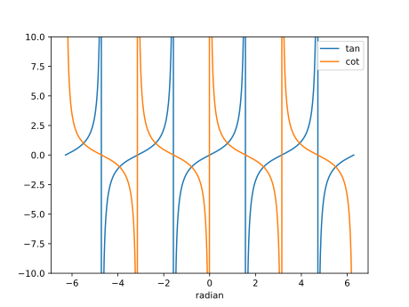

第4回：▶︎ 不連続な曲線を描く
■ plot関数のフォーマット・パラメータ
PyPlotパッケージに含まれる関数plotは、 複数回起動する毎に曲線の見た目を変える。
見た目を個別に変えるには、plot関数のデータを指定した直後に、 文字列(fmtパラメータ) を指定する。
fmtパラメータは、 色、マーカー種類、線の見た目を、1文字ないし2文字で指定する。 指定しなければ、規定値が選ばれる。
色を変える例
using PyPlot
xs=-10:0.1:10
plot(xs, 9.^xs, "b", label="b") # blue
plot(xs, 8.^xs, "g", label="g") # green
plot(xs, 7.^xs, "r", label="r") # red
plot(xs, 6.^xs, "c", label="c") # cyan
plot(xs, 5.^xs, "m", label="m") # magenda
plot(xs, 4.^xs, "y", label="y") # yellow
plot(xs, 3.^xs, "k", label="k") # black
plot(xs, 2.^xs, "w", label="w") # white (白背景では見えない)
xlim(0,3)
ylim(0,100)
legend()マーカーの形を変える例。 マーカーの色は全て青とした
using PyPlot
xs=-2:0.2:2
plot(xs, xs.^2, "b.", label=".") # point
plot(xs, xs.^2 -2, "b,", label=",") # pixel
plot(xs, xs.^2 -4, "bo", label="o") # circle
plot(xs, xs.^2 -6, "bs", label="s") # square
plot(xs, xs.^2 -8, "b*", label="*") # star
plot(xs, xs.^2 -10, "b+", label="+") # plus
plot(xs, xs.^2 -12, "bx", label="x") # x
plot(xs, xs.^2 -14, "bD", label="D") # diamond
plot(xs, xs.^2 -16, "bd", label="d") # thin diamond
xlim(-3,3)
legend()線のスタイルを変える例
using PyPlot
xs=-2:0.2:2
plot(xs, xs.^3-xs.^2, "r-", label="-") # solid line
plot(xs, xs.^3-xs.^2-2, "r--", label="--") # dashed line
plot(xs, xs.^3-xs.^2-4, "r-.", label="-.") # dash-dot line
plot(xs, xs.^3-xs.^2-6, "r:", label=":") # dotted line xlim(-2.2,2.2)
legend()
■ 0による除算
筆算では 0による除算の結果は未定義である。
Julia では、0による除算は、例外は発生せず、 「数でない数」 Inf, -Inf, NaN のどれかが得られる。
Infは、無限大 Infinity に由来する。 NaNは、数でない Not a Number に由来する。
julia> 1 / 0
Inf
julia> -1 / 0
-Inf
julia> 0 / 0
NaN▶︎ 関数が連続とは
関数が連続であるとは、 関数のグラフがつながっている，ちぎれていないことをいう。
「関数 $f(x)$ は $x=a$ で連続」とは、
が存在して、その値が $f(a)$ に等しいと定義される。
不連続とは、連続でないことである。 ただし、不連続な関数でも、連続な部分があることが多く、 それらを、枝 (branch) という。
この章では、主に、連続ではない関数のグラフを描く。
▶︎ 逆数関数を描く
逆数関数 $y=\dfrac{1}{x}$ を描いてみよう。
逆数関数 reciprocal function という。逆関数 inverse function と区別されたい。
さて、$\dfrac{1}{0}$の値はInfであるが、 plot関数は「数でない数」をスキップして何も描かない。分母$0$の除算を特別扱いする必要はない。
逆数関数は、$x=0$で不連続であり、$x$の正負に対応して二つの枝を持つ。
using PyPlot
xs=-3:0.1:3
plot(xs,1./xs)
xlim(-3,3)
ylim(-3,3)
plt[:axes]()[:set_aspect]("equal")続けて、水平線、垂直線、$y=x$, $y=-x$ を追加しよう。
plot(xs,xs, color="k", lw=0.5)
plot(xs,-1*xs, color="k", lw=0.5)
axhline(0, color="k", lw=0.5)
axvline(0, color="k", lw=0.5)
plt[:axes]()[:set_aspect]("equal")◀︎ 練習
(プログラミングでなく、数学の話題)
数学では「何らかの操作を行った結果が、元と重なること」を、 その操作に対して対称である(symmetric)という。
上のグラフを観察すると、逆数関数は、いくつかの操作に対して対称であることがわかる。どのような操作か？
▶︎ 不連続な有理式を描く
有理関数とは、多項式(分子)を多項式(分母)で割った関数である。
以下の有理関数を描こう。
まず、分母を描く。
using PyPlot
xs=-10:0.1:10
plot(xs, xs.^3+3xs.^2-4*xs-12)
ylim(-20,20)
xlim(-4,4)
axhline(0, color="k", lw=0.5)
axvline(-3, color="k", lw=0.5)
axvline(-2, color="k", lw=0.5)
axvline(2, color="k", lw=0.5)
分母は $x=-3, -2, 2$で 0 となるから、 上の有理関数は、この三点で不連続となる「可能性」がある。
では、上の有理関数を描いてみる。逆数関数の描画と同じように、分母0となる場合を特別扱いする必要はない。
xs=-10:0.05:10
plot(xs, (xs.^3+8)./(xs.^3+3xs.^2-4xs-12))
ylim(-10,10)
xlim(-4,4)
axhline(0, color="k", lw=0.5)
axvline(-3, color="k", lw=0.5)
axvline(2, color="k", lw=0.5)実際には、$x=-2$では不連続ではない。 分子・分母は共通項 $(x+2)$ で割れるからである。
もう少し、横軸の範囲を狭めて描く。
xs=-10:0.05:10
plot(xs, (xs.^3+8)./(xs.^3+3xs.^2-4xs-12))
ylim(-10,10)
xlim(-3,3)
axhline(0, color="k", lw=0.5)
axvline(-3, color="k", lw=0.5)
axvline(-2, color="k", lw=0.5)
axvline(2, color="k", lw=0.5)
◀︎ 練習
上の有理関数で、$x=-2$ に対する値を求めよ。
分子・分母は共通項 $(x+2)$ で割った関数のグラフを描き、 上のグラフと重なることを確かめよ。二つの曲線を比較するための描き方は、下の ▶︎ 周期関数 を参考にせよ（本章を通読してから取り組め）。
▶︎ 正接関数・余接関数を描く
正接 $y = \tan{x} =\dfrac{\sin{x}}{\cos{x}}$
余接 $y = \cot{x} =\dfrac{\cos{x}}{\sin{x}}$
ラジアン単位
正接 $\tan{x}$は、$\pi$ の奇数倍で不連続である。
余接 $\cot{x}$は、$\pi$ の偶数倍で不連続である。
using PyPlot
xs=-2pi:pi/360:2pi
plot(xs, tan.(xs), label="tan")
plot(xs, cot.(xs), label="cot")
ylim(-1e1, 1e1)
xlabel("radian")
legend()
角度単位
using PyPlot
xs=-360:1:360
plot(xs, tand.(xs), label="tand")
plot(xs, cotd.(xs), label="cotd")
xlabel("degree")
ylim(-1e1, 1e1)
legend()▶︎ 周期関数
上式のように、横軸を$T$だけ平行移動しても、 元の形に重なる関数を周期関数 (periodic function)という。 $T$ は、周期 (period) と呼ばれる。
▼▶︎ 周期関数を確認する
ラジアン単位の正接関数 tan は、周期 $2\pi$である。 平行移動して重なることを、図示してみよう。
比較の基準となる曲線は fmt="bo" (blue, circle, 青い円) で描いた。
比較される曲線は fmt="r." (red, point, 赤い点) で描いた。
青い円の真ん中に、赤い点が描かれ、同じ位置にプロットされていることが分かる。
using PyPlot
xs=-2pi:pi/18:2pi
plot(xs, tan.(xs), "bo", label="tan")
plot(xs, tan.(xs+2*pi), "r.", label="tan, shifted by 2pi")
ylim(-1e1, 1e1)
xlim(-1.2*pi, 1.2*pi)
xlabel("radian")
legend()▶︎ 符号関数を描く
関数 sign(x)は、$x > 0$なら1、$x=1$なら0、$x < 0$なら -1 をそれぞれ返す。
using PyPlot
using PyPlot
xs=-6.4:0.1:6.4
-6.4:0.1:6.4
plot(xs, sign.(xs), ".")
三角関数と関数 sign とを組み合わると、 不連続な周期関数を作ることができる。
▶ 方形波を描く
二つの一定値を交互にとる周期関数を方形波 (square wave)という。
plot(xs, cos.(xs), "r", label="cos(x)")
plot(xs, sign.( cos.(xs)), "b.", label="sign(cos(x))")
legend()◀︎ 練習
上の例の周期はいくつか？ 周期が 1 になるように、修正してみよ。
▶︎ 絶対値関数
関数 abs(x)は、$x$の絶対値を返す。
using PyPlot
xs=-1:0.1:1
plot(xs,abs.(xs))
plt[:axes]()[:set_aspect]("equal")絶対値関数の符号を変えたり、平行移動すると、色々な山や谷の形を描くことができる。
using PyPlot
xs=-2pi:pi/18:2pi
# 符号を変える。山の形
plot(xs, -abs.(xs), label="-abs(x)")
# 縦軸の平行移動
plot(xs, pi-abs.(xs), label="pi-abs(x)")
# さらに、横軸の平行移動
plot(xs, pi-abs.(xs-pi), label="pi-abs(x-pi)")
legend()
xlabel("x")
axhline(0,color="k",lw=0.5)
axvline(0,color="k",lw=0.5)
axvline(pi,color="k",lw=0.5)
plt[:axes]()[:set_aspect]("equal")▶︎ クランプ関数
関数 clamp(x, lo, hi)は、上限と下限で制限する関数である。 すなわち、$x$の値が hi よりも大きければ hiを、lo よりも大きければ loを返す。 どちらでもなければ、そのままの値を返す。
using PyPlot
xs=-5:0.1:5
plot(xs,clamp.(xs,-1,2))
xlim(-5,5)
ylim(-5,5)
plt[:axes]()[:set_aspect]("equal")■ 床関数・天井関数
床関数 floor(x)は、$x$を超えない最大の整数を返す。
天井関数 ceil(x)は、$x$以上の最小の整数を返す。
下のグラフで、整数 $x$ に対する関数の値を、よく観察せよ。
これらの関数は、■ 浮動小数点数から整数への変換 で用いられる。
using PyPlot
xs=-2.4:0.2:2.4
plot(xs, ceil.(xs), "o", label="ceil")
plot(xs, floor.(xs), ".", label="floor")
for x in -2:2
axvline(x, color="k", lw=0.5)
axhline(x, color="k", lw=0.5)
end
xlim(-3.2,3.2)
ylim(-3.2,3.2)
legend()
plt[:axes]()[:set_aspect]("equal")◀︎ 練習
床関数または天井関数を用いて、 正の数を 1の位で四捨五入するには、どうしたらよいか？
1の位での四捨五入とは、その数の小数点第一桁目が 5以上であれば 元の数に 1を加え、5未満であれば何もしない操作である。
プログラムを書いて、グラフを描き、確認してみよ。 特に、小数点以下が 0.5 に等しい時に、実行してみよ。
数字のおおよその値を表すのに、四捨五入がよく用いられるが、科学技術分野で単純な四捨五入は適当ではない。「数字の丸め方」は、国際規格 ISO 31-0 : 1992 に相当する日本工業規格 JIS Z8401 : 1999 に定められている。JIS規格の全文は、例えば、ここで読める。→ kikakurui Z8401-1999-01
◀︎ 練習
ここまで紹介した関数を使って、色々な不連続曲線や周期関数を描いてみよ。 Jupyter notebookの Markdownセルを用いて、説明文も加えよ。
★ 今回のまとめ
plot関数のフォーマットパラメータ
0による除算逆数関数
不連続な有理関数
正接・余接関数
周期関数
符号関数
絶対値関数
床関数・天井関数